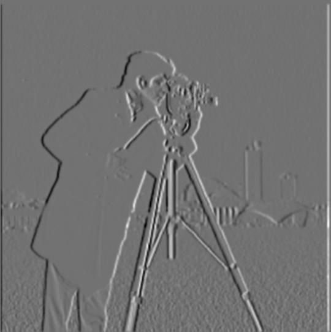
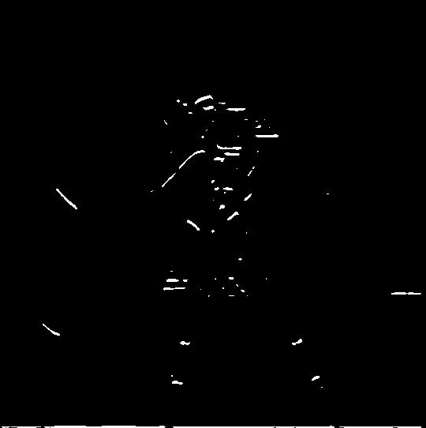
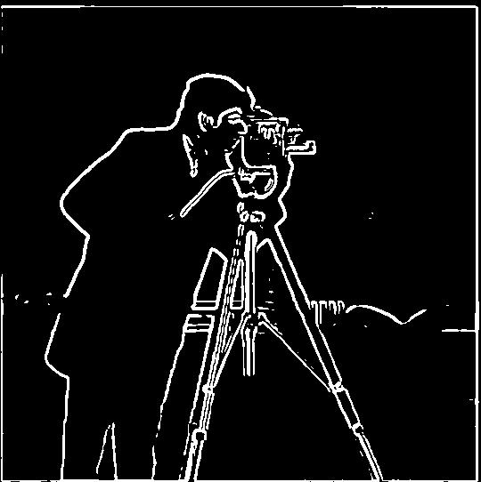
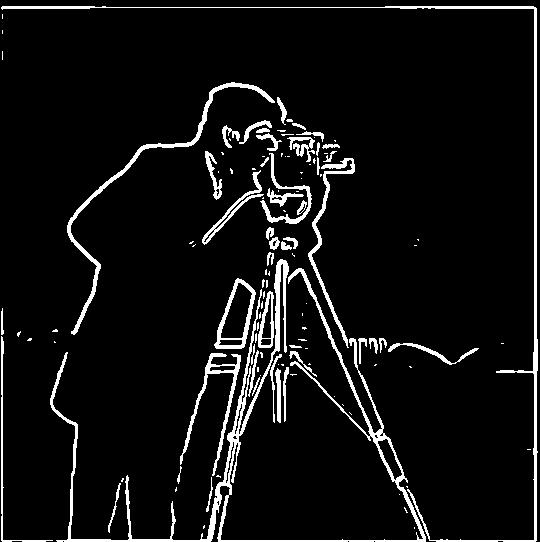

Derivative of Gaussian Filter.
Finite Difference operator on Gaussian filtered-image
With \(f\) being the grayscale cameraman.png image again, let \(g\) denote a Gaussian filter. For our results, we used window size \(k=9\) and standard deviation \(\sigma = 1.5\) to create our \(9\times 9\) Gaussian filter. Using once againscipy.signal.convolve2d with symmetric boundaries and mode='same', we get the images below:
Original image \(f\)

Derivative of Gaussian filters on the image
Using once againscipy.signal.convolve2d with symmetric boundaries and mode='same', the difference now is that we first compute \( g\star D_x\) and \(g\star D_y\) and then later compute \( (g\star D_x) \star f\) and \( (g\star D_y) \star f\). We will see that the outputs from both approaches are identical, which shows that convolution commutes and associates. We get the images below:
Original image \(f\)

Image with Dog y filter \( (g\star D_y) \star f\)

Gradient Magnitude Filter
 

Comparison with Part 1.1: Removal of Noise
One of the most significant features in comparing images from Part 1.1 and Part 1.2 is that there is virtually no noise near the bottom of the binarized images in Part 1.2 images as compared to Part 1.1 images. Furthermore, we have much thicker edges in this case, so DoG filters seem to be visually functioning a lot better than standard finite difference operators.
thresh = 0.07 is also much lower to actually detect edges. Specifically, while at the same thresh finite difference operators detect more edges, the edges detected by DoG filters are thicker and more immune to noise.
Commutativity of Convolution
Notice that DoG filtering vs. Blurring and then using finite difference operators produces virtually the same output, barring minor differences due to noise:Gradient comparison